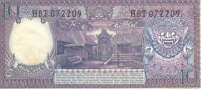
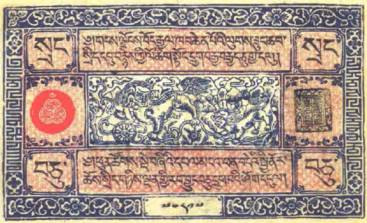

Тайны бумажных денег : Жуткие демоны пустынь

Как уже говорилось, жизнь азиатов пропитана верой в существование потусторонних сил. Мир в представлении многих народов Азии населен сонмом бесплотных существ, которые опасны для людей и которые где только могут творят свое злое дело. К таковым относятся и демоны пустынь. Одно из самых ранних упоминаний этой нечисти встречается в записках известного китайского путешественника VII в. Сюань-Цзана, который на своем пути в Индию пересек пустыню Такламакан:
«Когда поднимаются ветры, люди быстро теряют ориентацию и впадают в состояние полной беспомощности. Им слышатся жуткие завывающие звуки и скорбный плач, которые пугают их и путают еще больше. Поэтому многие погибают в пути. Все это дело рук демонов и злых духов».
Интересно, что подобного рода воспоминания оставляли и европейские путешественники по Азии. Проходивший тем же путем (только несколькими веками позже китайца) Марко Поло тоже был убежден, что его преследовали страшные обитатели пустыни (рис. 54).


А вот как свои встречи с неведомым описывает в книге «Разбойники, призраки и китайцы» (1965) немец Ганс Эдуард Деттманн, который с 1927 по 1935 г. принимал участие в последней экспедиции Свена Хедина по Восточному Туркестану и пустыне Гоби: «Ветер воет, а может быть, так заманивают нас демоны пустыни? Ступайте дальше, — стонут они, — вы все равно погибнете, и тогда вы наши!.. (По поводу умирающего верблюда. — Р. М.). А не пристрелить ли нам бедное животное, избавив его тем самым от мучений? Однако нет, нам нельзя этого делать! Монголы не хотят, чтобы мы опередили демонов пустыни, отобрав у них законную жертву. Они уверены, что тогда каравану грозит несчастье… (По поводу волчьего воя, повторявшегося вокруг лагеря несколько ночей подряд и отсутствия всяких следов. — Р. М.). Однажды вечером мы спросили их (монголов. — Р. М.), почему они больше не поют. „Как, господин, разве вы не знаете, что мы окружены демонами? Мы не нашли следов разбойников, а волки тут не водятся“. Не имеет смысла переубеждать этих, совершенно по-другому воспитанных людей. Они верят в призраков и демонов. Ламаистские монастыри полны языческих изображений и фигур с дикими, искаженными мордами, которые в таинственном полумраке храмов кажутся еще более жуткими».
О странных обычаях суеверных аборигенов упоминает и немецкий исследователь Альберт фон Ле Кок, когда изучал исцарапанные фрески в развалинах одного древнего города:
«Здесь укоренилось мнение, что нарисованные люди и звери, если им не выцарапать глаза и рты, по ночам оживают, сходят со стен и портят людей, скот и посевы».
Однако сам он тоже неоднократно испытывал неприятные ощущения постороннего присутствия, когда находился в Кызылских (Кызырских) пещерах (Восточный Туркестан) (рис. 55).
Он говорил о демонической атмосфере окрестностей, вероятно, вызванной жутковатыми изображениями на стенах пещерных монастырей: «Несмотря на окружающую красоту, атмосфера угнетала».